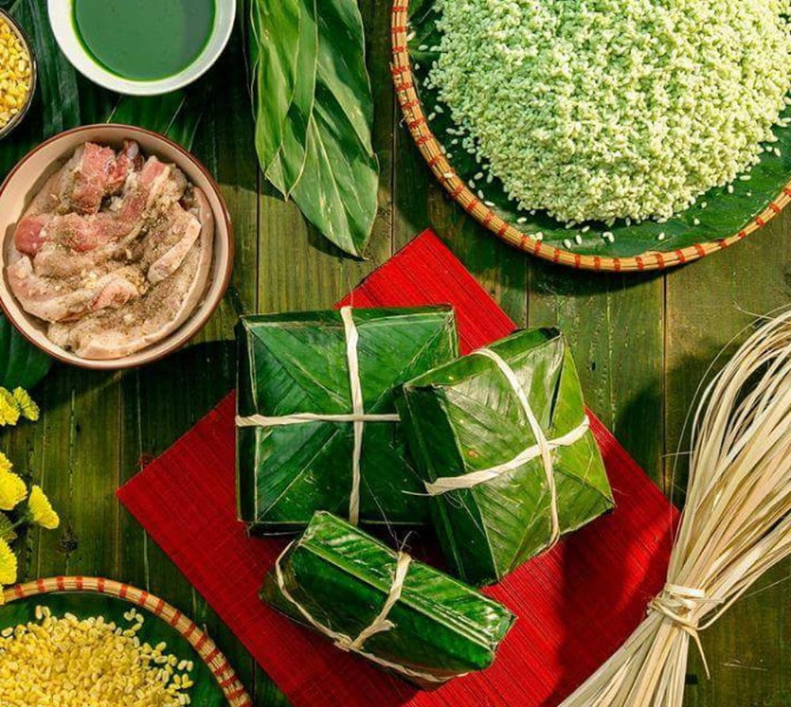

Bánh Chưng không chỉ là một món ăn, mà còn là biểu tượng của sự kết tinh giữa trời và đất, lòng biết ơn tổ tiên. Hình ảnh cả gia đình quây quần bên nồi bánh chưng đỏ lửa trong đêm giao thừa chính là linh hồn của Tết Việt. Từng lớp lá dong xanh mướt gói trọn gạo nếp thơm, đậu xanh bùi và miếng thịt mỡ béo ngậy, tạo nên hương vị Tết không thể lẫn vào đâu được.
Ý nghĩa: Tượng trưng cho lòng hiếu thảo và sự sum vầy. Nguyên liệu: Lá dong, gạo nếp cái hoa vàng, đậu xanh, thịt lợn.